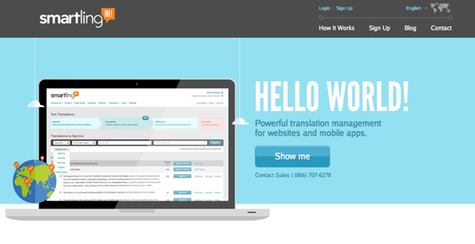
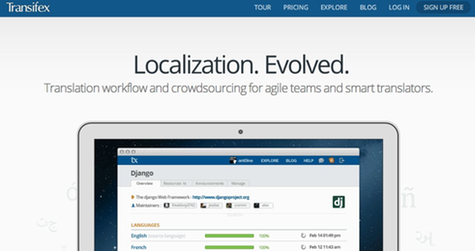

简介与对比

Smartling
Smartling实际上为您提供了三种不同的转换选项。最便宜和最快的是机器翻译，但它也是最准确的。给你最好的中间立场是众包翻译;它是相对便宜的，并且可以是几乎一样精确的专业翻译服务。定价的内容和流量变化。作为额外的奖励， Smartling可以承载新的语言的网站为你，让你只负责主持根语言版本。

Transifex
如果您要管理自己的网站翻译项目，然后像Transifex可能是一个不错的选择。它被设计为“敏捷团队和智能翻译， ”坚持敏捷项目管理的原则。起价为$ 19 /月，不包括你的众包翻译的费用。

Gengo
工作既可以通过在线提交或通过API的方式，玄五雇佣一队预先测试过的译员。当翻译完成后，您可以查看并翻译发表评论，得到更正免费。已完成的项目，然后通过电子邮件或回通过API发送给您。标准定价为0.05美元和字上升到约0.15美元/字为“超”级，其中包括专业级的服务，额外校对。

Lingotek
而不是依赖于一个单一的翻译来处理你的网站翻译， Lingotek使用它称之为“翻译网络。 ”这包括其协同翻译平台，同时也将其翻译市场，合作伙伴网络和开发社区。虽然网站本地化无疑是其中的一部分， LingoTek有翻译自由职业者谁也可以做桌面出版，字幕，转录和配音工作，以及其他服务的网络。